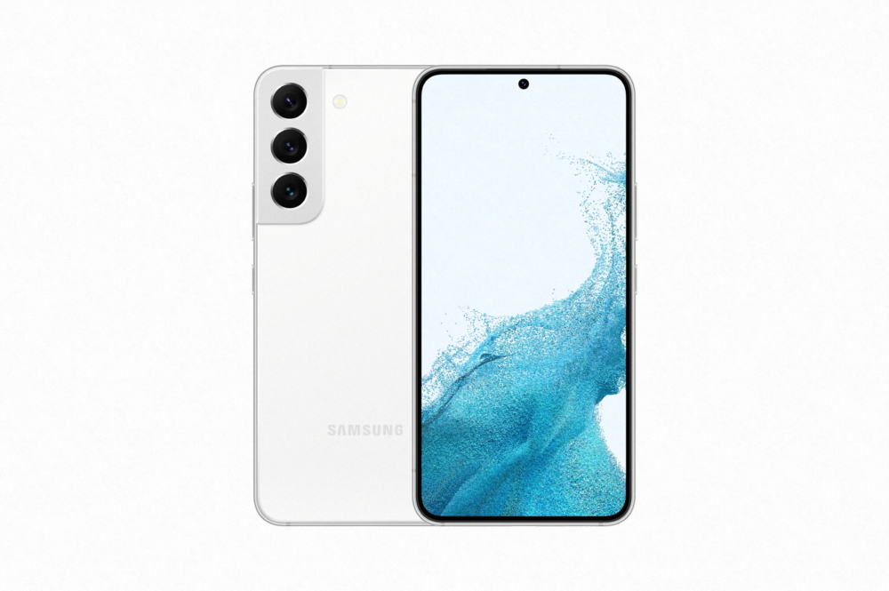
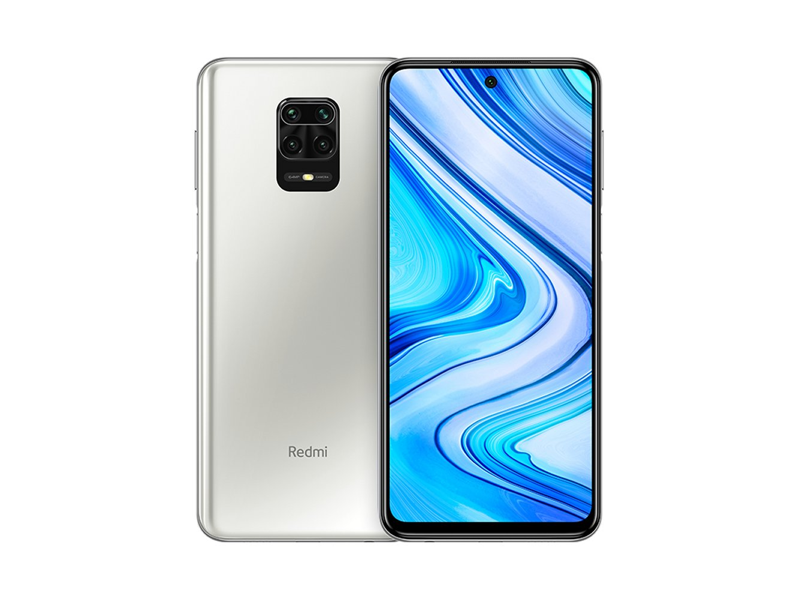

Apple iPhone

iPhone 14 Pro Max mobile was launched on 7th September 2022. The phone comes with a 120 Hz refresh rate 6.70-inch touchscreen display offering a resolution of 2796x1290 pixels at a pixel density of 460 pixels per inch (ppi). The display sports Other for protection. iPhone 14 Pro Max is powered by a hexa-core Apple A16 Bionic processor. The iPhone 14 Pro Max supports wireless charging, as well as proprietary fast charging.
Samsung Galaxy
Galaxy S22 with its new 200MP Adaptive Pixel sensor and iconic embedded S Pen, the Galaxy S23 series — also featuring the Galaxy S23+ and Galaxy S23 — represents a new era of Samsung’s ultimate premium phone experience. The Galaxy S23 series features epic cameras that give users more freedom to explore their creativity, the world’s fastest mobile graphics1 thanks to the Snapdragon® 8 Gen 2 Mobile Platform for Galaxy, and a striking design that advances the company’s sustainability commitments with more components made using recycled materials than in any other Samsung Galaxy smartphone.
Oneplus

The OnePlus 10 is a beautiful smartphone. From the smooth glass to the unusually shaped camera module that adds so much visual interest to an otherwise ordinary shape, it grabs your attention, and the textured alert slider adds some much-needed physical interaction to give it some personality.It’s slim at 8.5mm and modestly weighted at 205 grams. I’ve been using it without a case and do find it a little slippery. It will slide around on smooth surfaces too, so beware when you think it’s secure because it may have other ideas.
Redmi
Xiaomi Redmi Note 11 presents a perfect blend of power and consistency. A 5000mAh battery enables users to continue with their operations for prolonged hours whereas its 128GB internal storage can be used to save plenty of apps and files. The brand has also provided a fingerprint sensor on the side, making it more convenient to use. Xiaomi Redmi Note 12 Pro 5G features a 6.67 inches AMOLED type display that is incorporated with an aspect ratio of 20:9, pixel density of 395ppi and a resolution of 1080 x 2400 pixels.